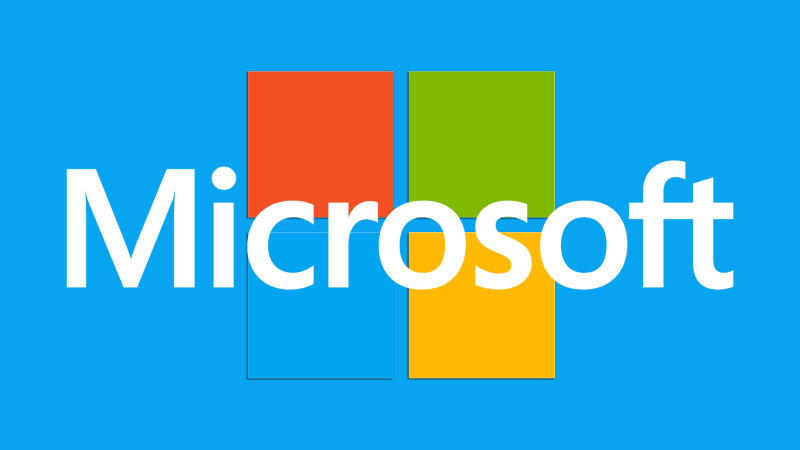

Hey I am Bill Gates
Born in 1955 in Seattle, Gates had a supportive family “who encouraged his interest in computers at an early age”, reads the biography on his blog, Gates Notes. He enrolled in Harvard University by 1973, but dropped out to start software company Microsoft with his friend, Paul Allen, in 1975. The pair had a vision of “a computer on every desktop and in every home”. It must have seemed improbable to people in those years. But today it is a reality in many parts of the world as technology is integrated more and more into peoples’ everyday lives.
A software developer


Projects

He enrolled in Harvard University by 1973,
but dropped out to start software company Microsoft with his friend,
Paul Allen, in 1975.
The pair had a vision of “a computer on every desktop and in every home”.
It must have seemed improbable to people in those years. But today it is
a reality in many parts of the world as technology is integrated more and
more into peoples’ everyday lives.
In 2000, Gates and his wife, Melinda,
set up the Bill and Melinda Gates Foundation. Through it,
they have been involved in improving the lives of people across the world
. It works in many sectors, including HIV/Aids programmes, agricultural development
, family planning and financial planning assistance for the poor.
Gates left his daily job at Microsoft in 2008, but remains a member
of the board and serves as a technology adviser. “These days Bill focuses most of
his time on the work he and Melinda are doing through their foundation,”
his biography reads.
Work in Africa
The foundation does work across the world, including in Africa.
Nearly a billion people worldwide are affected by severe hunger and poverty,
it says; it has identified agricultural development to help farmers who rely
on tiny plots of land for their food and some income.
“Our goal is to help these farming families produce more food
and increase their income, while preserving the land for future generations,”
the foundation explains.
Contact Me